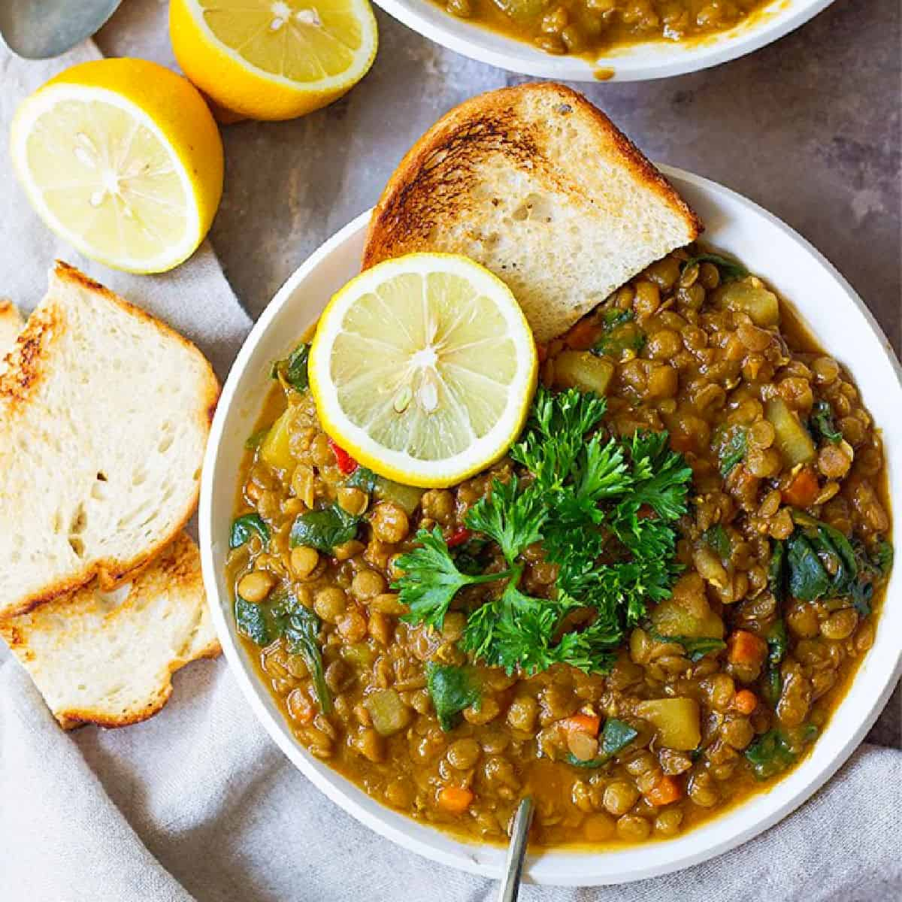

We're making green lentil "gumbo" soup with the same things we put in gumbo, except the signature roux. This delicious soup is gluten-free, dairy-free, and much lower in fat, and the lentils act as the thickener. The best part is that it has all the gumbo flavor you love.